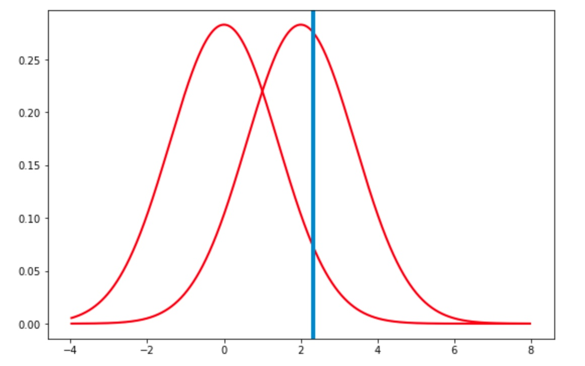

La région critique est l’ensemble des couples (x_1,x_2) tels que x_1+x_2>a.
Utiliser la propriété suivante :
si X_1 suit la loi N(\mu_1,\sigma_1) et X_2 suit la loi N(\mu_2,\sigma_2) et si X_1 et X_2 sont des variables indépendantes, alors X_1+X_2 suit la loi N(\mu_1+\mu_2,\sqrt{\sigma_1^2+\sigma_2^2})
La somme X_1+X_2 suit donc ici N(0+0,\sqrt{1^2+1^2}) c.a.d. N(0,\sqrt{2})
Ainsi \quad p(X_1+X_2>a) \quad = \quad p(\frac{X_1+X_2}{\sqrt{2}}>\frac{a}{\sqrt{2}})
\frac{X_1+X_2}{\sqrt{2}} suit une loi normale centrée réduite donc on peut lire p(\frac{X_1+X_2}{\sqrt{2}} \leq \frac{a}{\sqrt{2}}) dans la table de la fonction de répartition de la loi normale.
On cherche a tel que p(\frac{X_1+X_2}{\sqrt{2}}>\frac{a}{\sqrt{2}})=0.05 or p(\frac{X_1+X_2}{\sqrt{2}} \leq \frac{a}{\sqrt{2}})=1-p(\frac{X_1+X_2}{\sqrt{2}}>\frac{a}{\sqrt{2}}). Pour p(\frac{X_1+X_2}{\sqrt{2}} \leq \frac{a}{\sqrt{2}})=0.95 on trouve \frac{a}{\sqrt{2}}=1.65 soit a=2.33
En conclusion, le test construit est qu’on considère l’hypothèse H_0 valide si a<2.33.
Dans cette question, on utilise le seuil de 2.33 trouvé précédemment.
On cherche l’erreur de 2eme espèce, qui va amener à rejeter H_1 à tort, c’est à dire :
les deux tirages se font selon l’hypothèse H_1, c.a.d. la somme X_1+X_2 suit donc ici N(1+1,\sqrt{1^2+1^2}) c.a.d. N(2,\sqrt{2})
on obtient une somme X_1+X_2 inférieure à 2.33
p((X_1+X_2) \leq 2.33)=\beta p(\frac{(X_1+X_2)-2}{\sqrt{2}}) \leq \frac{2.33-2}{\sqrt{2}})=\beta
On trouve en lisant la table que \beta=0.591
